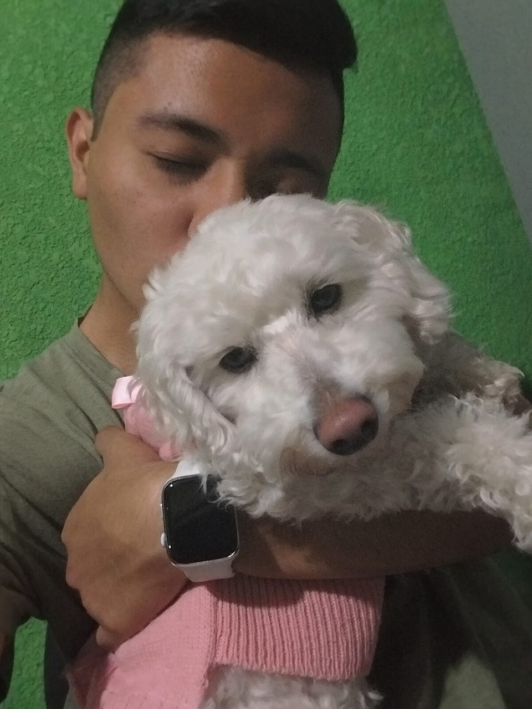
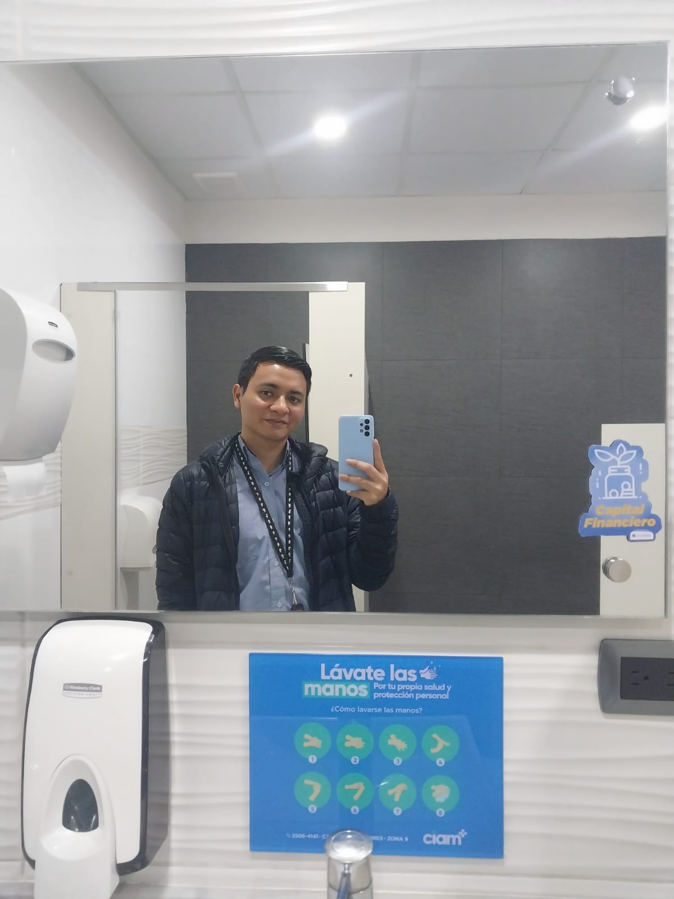

Mi nombre es Diego, realmente me gusta que me llamen por mi segundo nombre "Fernando", aunque prefiero "Fer" xD ; soy estudiante de la facultad de ingeniería y estoy desarrollando mi proyecto final del curso de Introducción a los Sistemas de Cómputo.
Bueno... soy un chico que ha aprendido muchas cosas a lo largo de mis cortos 18 años, me considero un adulto capaz de lograr lo que se proponga, he de admitir que tengo un corazón y sentimientos muy sensibles, creo que eso en muchas ocasiones no
me ayuda a ser lo suficientemente maduro, pero considero que son cosas que tengo que ir mejorando con el paso del tiempo, sin embargo, me ha gustado mucho el cambio radical que he tenido de ser adolescente a adulto con muchas responsabilidades, aún
me causa pena asistir al banco a realizar diligencias, pero me ha gustado el hecho de ser adulto y tener respondabilidades; en base a mi vida laboral, tengo la oportunidad de laborar para una empresa llamada CIAM ya desde hace 6 meses, estoy como
Técnico de Soporte Senior y el tener ese cargo ha significado varios retos para mí, retos los cuales me han hecho crecer como laboralmente y formar mi caracter para tomar ciertas decisiones, he aprendido mucho sobre teconología y he conocido a personas
muy buenas en lo que hacen, personas a las cuales admiro por su conocimiento y aspiro a algún día tener ese conocimiento e incluso más.

Tengo una mascota llamada Bonie la cual considero como mi hija, la quiero y amo con todo mi corazón, diría que es el ser que me motiva a ser mejor cada día, me encanta su manera de demostrarme su lealtad a través de momentos que hemos compartido juntos,
momento que llevaré siempre conmigo

Esto ha sido un poco sobre mí.
